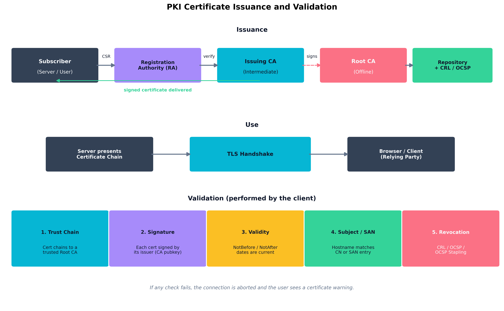
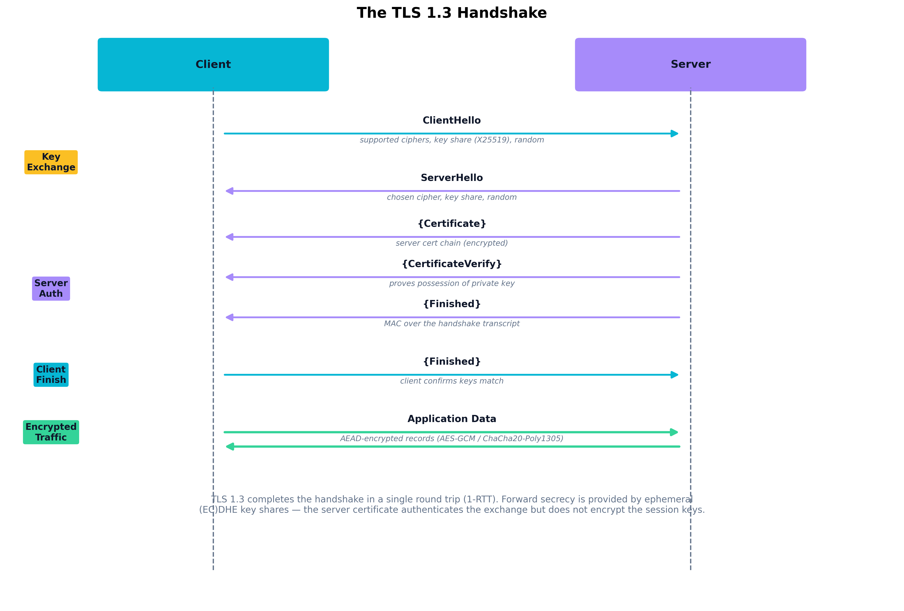

Chapter 8: Cryptography and Public Key Infrastructure
Aligned SecurityX Objectives:
- 2.4: Given a scenario, apply security concepts to the design of access, authentication, and authorization systems.
- 3.7: Explain the importance of advanced cryptographic concepts.
- 3.8: Given a scenario, apply the appropriate cryptographic use case and/or technique.
Cloze Problem Set: The Mad Hatter Rebuilds Teatime Tech’s PKI
Learning Outcomes:
- Architect a Public Key Infrastructure (PKI), including certificate authorities, registration authorities, and the certificate lifecycle.
- Evaluate the impact of post-quantum cryptography (PQC) on existing systems and migration plans.
- Analyze advanced cryptographic concepts, including key stretching, key splitting, forward secrecy, and homomorphic encryption.
- Apply cryptographic techniques to secure data at rest, in transit, and in use.
- Implement envelope encryption and hardware-accelerated cryptographic operations.
- Design certificate-based, passwordless, and mutual authentication mechanisms.
- Formulate data sanitization, anonymization, and tokenization strategies.
- Evaluate the use cases for immutable databases, blockchain, and secure multiparty computation.
Introduction
Cryptography is the layer underneath nearly everything else in security. Authentication, secure messaging, software updates, payment systems, signed boot chains, the very URL bar in your browser — all of them rest on a small set of mathematical primitives and a much larger set of operational decisions about how those primitives are used. Get the math right and the operations wrong, and your system is still broken.
This chapter focuses on those operational decisions. We start with Public Key Infrastructure (PKI) — the global trust system that lets a browser in Boston accept that a server in Singapore really belongs to the bank it claims to be. From there, we move into the day-to-day applications of cryptography: protecting data at rest, in transit, and in use; sanitizing data when its useful life is over; and choosing between centralized and decentralized key management. We then look at advanced techniques — envelope encryption, forward secrecy, homomorphic encryption — that solve problems traditional cryptography cannot. Finally, we confront the long-shadowed threat of quantum computing and the migration to post-quantum cryptography that organizations are beginning today, even though the threat is years away.
The goal is not to make you a cryptographer. The goal is to make you the kind of architect who knows when to call one — and who can recognize a dangerous design before it ships.
How Do We Architect a Robust PKI?
A Public Key Infrastructure (PKI) is the combination of people, policies, hardware, and software that issues, manages, and revokes the digital certificates that bind public keys to identities. Without PKI, asymmetric cryptography is useless at scale: anyone can generate a key pair and claim to be anyone, and there is no scalable way to verify those claims. PKI solves that problem by introducing trusted third parties — certificate authorities — that vouch for identity through cryptographically signed assertions called digital certificates.
Certificate Authorities and Registration
A Certificate Authority (CA) is the organization that issues certificates. Public CAs (DigiCert, Let’s Encrypt, Sectigo, GlobalSign) issue certificates trusted by web browsers and operating systems. Private CAs are run inside enterprises to issue certificates to internal systems, employees, and devices that the public CAs would have no business vouching for.
In any well-designed PKI, the CA is not a single server. It is a hierarchy:
- Root CA — The top of the trust chain. Its certificate is self-signed and distributed out-of-band into operating system and browser trust stores. Because compromise of a root CA destroys the entire hierarchy, root CAs are kept offline in physically secured vaults and only brought online for the rare ceremony of signing a new intermediate.
- Intermediate (Issuing) CA — A CA whose certificate is signed by the root. Day-to-day certificates are issued from intermediates so that the root’s signing key can stay offline. If an intermediate is compromised, it can be revoked without taking down the whole PKI.
- Registration Authority (RA) — The component
(sometimes a separate organization, sometimes a function inside the CA)
that handles identity vetting. The RA verifies that a
request for a certificate for
bank.example.comactually comes from someone authorized to represent that domain. The CA only signs certificates that the RA has approved.
The lifecycle of a certificate runs through several stages. A subscriber generates a key pair and a Certificate Signing Request (CSR) containing the public key and identity information. The CSR is submitted to the RA, which performs domain validation (DV), organization validation (OV), or extended validation (EV) depending on the certificate class. Once validated, the issuing CA signs the certificate and publishes it. The certificate is installed on the subscriber’s system and presented to relying parties during normal operation. Toward the end of its validity period, the subscriber renews the certificate; if the private key is compromised before then, the certificate is revoked.

Figure 8.1: The end-to-end lifecycle of a digital certificate. Issuance flows through the registration authority and issuing CA up to the offline root. Use occurs through TLS handshakes. Validation — performed every time the certificate is presented — checks the trust chain, signature, validity dates, subject match, and revocation status.Certificate Extensions, Templates, and OCSP Stapling
A certificate is not just a wrapper around a public key — it carries structured fields, called extensions, that constrain how the certificate may be used.
- Subject Alternative Name (SAN) — The list of hostnames the certificate is valid for. Modern browsers ignore the legacy Common Name (CN) field entirely; if a hostname is not in the SAN list, the certificate is invalid for that name.
- Key Usage and Extended Key Usage (EKU) — Restrict the cryptographic operations the certificate can perform: server authentication, client authentication, code signing, email protection, time stamping. A certificate issued for “server authentication” cannot legitimately be used to sign code.
- Basic Constraints — Marks whether a certificate is
a CA. A leaf certificate that omits this flag (or sets it to
CA:FALSE) cannot issue further certificates downstream. - Authority Information Access (AIA) and CRL Distribution Points (CDP) — URLs where relying parties can find the issuer’s certificate and revocation information, respectively.
In an enterprise PKI, certificates are typically issued from templates that pre-define these extensions for a given role: “Domain Controller Authentication,” “Smart Card Logon,” “Web Server.” Templates make issuance auditable and consistent.
Example
Reading a real TLS certificate
The output of
openssl x509 -in cert.pem -noout -textfor a typical web server certificate includes (abbreviated):Subject: CN = api.example.com Issuer: CN = Example Issuing CA, O = Example Inc. Validity: Not Before: Apr 3 00:00:00 2026 GMT Not After : Jul 2 23:59:59 2026 GMT (90-day lifetime) X509v3 Subject Alternative Name: DNS:api.example.com, DNS:api-internal.example.com X509v3 Basic Constraints: critical CA:FALSE X509v3 Key Usage: critical Digital Signature, Key Encipherment X509v3 Extended Key Usage: TLS Web Server Authentication X509v3 CRL Distribution Points: URI:http://crl.example-ca.com/issuing.crl Authority Information Access: OCSP - URI:http://ocsp.example-ca.com CA Issuers - URI:http://certs.example-ca.com/issuing.crt CT Precertificate SCTs: [signed timestamps from two public CT logs]Notice five things at once: this certificate is not a CA (
CA:FALSE), it is restricted to server authentication only (the EKU forbids using it to sign code or authenticate a client), it has a short lifetime (90 days), it carries both CRL and OCSP revocation pointers, and it has been logged in Certificate Transparency. Every one of those properties is a control — and any one of them missing should make a relying party suspicious.
Revocation is the achilles heel of classical PKI. The original mechanism, Certificate Revocation Lists (CRLs), is a signed list of revoked serial numbers that grows over time and must be downloaded by every relying party. The next-generation answer, the Online Certificate Status Protocol (OCSP), lets a client query the CA in real time for the status of a single certificate — but doing so leaks browsing data to the CA and adds round-trip latency. OCSP stapling fixes both problems: the server periodically fetches a signed OCSP response from its CA and “staples” it to the TLS handshake, so the client gets fresh revocation information without contacting the CA at all.
Key Point Revocation is the part of PKI that breaks under stress. Browsers historically “soft-fail” on OCSP errors — if the OCSP responder is unreachable, the connection still proceeds. The combination of OCSP stapling plus short-lived certificates (90 days, typical of Let’s Encrypt) is the modern solution: when certificates expire quickly, revocation matters less because the window of abuse is naturally bounded.
Certificate Deployment and Integration Approaches
Modern PKI is rarely managed by hand. Automated Certificate Management Environment (ACME), the protocol Let’s Encrypt invented and the industry has adopted, lets servers prove control of a domain and obtain or renew a certificate without human intervention. Inside the cloud, services like AWS Certificate Manager, Azure Key Vault Certificates, and GCP Certificate Manager issue and rotate certificates as part of platform-managed infrastructure.
Integration patterns to know:
- TLS termination at a load balancer or CDN. The certificate lives on the edge; backend traffic uses internal certificates from a private CA.
- Mutual TLS (mTLS). Both sides present certificates. Common in service meshes (Istio, Linkerd) where every workload has a short-lived identity certificate issued by an internal CA.
- Certificate pinning. A client hard-codes the expected certificate (or its public key hash) and refuses any other. Pinning protects against rogue CAs but creates serious operational risk if keys must be rotated unexpectedly — pinning has been retired from public web browsers in favor of Certificate Transparency logs.
- Certificate Transparency (CT). A public, append-only log of every certificate issued by a participating CA. Modern browsers require that publicly trusted certificates appear in CT logs, making it possible to detect unauthorized issuance after the fact.
| Certificate Type | Validation | Typical Use | Lifetime |
|---|---|---|---|
| Domain Validated (DV) | Proof of domain control only | Most public websites | 90 days – 1 year |
| Organization Validated (OV) | Domain control + organization vetting | Corporate sites, B2B portals | 1 year |
| Extended Validation (EV) | Full legal entity verification | Banks, high-trust commerce | 1 year |
Wildcard (*.example.com) |
DV/OV; covers any single label | Multi-subdomain deployments | 1 year |
| Code Signing | Publisher identity, often hardware-bound | Software distribution | 1–3 years |
| Client / Smart Card | Identity proofing of a person | Workforce authentication | 1–3 years |
| Internal / Private CA | Defined by enterprise policy | mTLS, device, service identity | Hours to years |
How Do We Apply Cryptography in the Real World?
Once a PKI is in place, cryptography becomes a tool for protecting data through three distinct phases of its life: at rest on disk, in transit across a network, and in use while it is being processed in memory. Each phase has its own threats, its own primitives, and its own performance and operational trade-offs.
Data at Rest, in Transit, and in Use
Data at rest lives on storage media — disks, SSDs, backup tapes, object storage, database files. The dominant control is symmetric encryption (AES-256 in GCM or XTS mode) using keys held in a dedicated Key Management Service (KMS) or Hardware Security Module (HSM). Full-disk encryption (BitLocker, LUKS, FileVault), database transparent data encryption (TDE), and cloud storage encryption all fit this model. The threat addressed is physical theft of the medium and unauthorized access to backups; encryption at rest does almost nothing against an attacker who has compromised the running operating system, because the OS already has the keys mounted.
Data in transit moves over networks. The dominant control is TLS for general traffic, IPsec for VPN tunnels, SSH for administrative sessions, and S/MIME or PGP for email at rest in inboxes (a hybrid case). TLS combines asymmetric cryptography (for authentication and key exchange) with symmetric cryptography (for bulk data) so that you get the trust properties of public-key crypto with the speed of symmetric crypto.
Data in use is the hardest phase. Once data is decrypted into RAM to be processed, anyone with privileged access to that process — a malicious admin, a kernel-level attacker, a hostile cloud insider — can read it. Three classes of solution have emerged:
- Confidential computing uses CPU features (Intel SGX, AMD SEV-SNP, ARM CCA, AWS Nitro Enclaves) to create trusted execution environments (TEEs) whose memory is encrypted and inaccessible even to the host operating system or hypervisor.
- Homomorphic encryption allows computation on ciphertext without decrypting it (covered in detail later in this chapter).
- Secure multiparty computation (SMPC) lets multiple parties jointly compute a function over their inputs without any party learning the others’ inputs.
| Property | Symmetric Cryptography | Asymmetric Cryptography |
|---|---|---|
| Key model | One shared secret key | Key pair (public + private) |
| Speed | Very fast; gigabytes/second | Slow; thousands of ops/second |
| Typical algorithms | AES, ChaCha20 | RSA, ECDSA, Ed25519, EdDSA |
| Strength of “good” key | 128–256 bits | 2048–4096 bits (RSA), 256 bits (EC) |
| Dominant use | Bulk data encryption | Authentication, key exchange, signatures |
| Key distribution problem | Hard — requires a secure channel | Solved — public keys are public |
Secure Email, Non-Repudiation, and Privacy Use Cases
Email security uses two overlapping tools. S/MIME binds email signing and encryption to X.509 certificates issued by an enterprise PKI; it integrates well with Outlook and other corporate clients but does not work without the PKI behind it. PGP / OpenPGP uses a decentralized web of trust in which users sign each other’s keys directly; it predates corporate PKI and survives in security-conscious communities and software distribution.
Both achieve non-repudiation through digital signatures: a message signed with a private key cannot plausibly be denied by the key’s owner, because no one else could have produced the signature. Non-repudiation is what gives digital signatures legal weight in many jurisdictions for contracts, audit logs, and software releases.
Data Sanitization, Anonymization, and Tokenization
When data outlives its useful life — or needs to be analyzed without exposing the underlying subjects — cryptography offers several techniques to shrink or eliminate the sensitive surface.
- Data sanitization deliberately destroys data so that recovery is infeasible. Methods include overwriting (multi-pass for magnetic media; a single pass is sufficient for modern SSDs and effectively wiped when the SED’s media key is rotated), degaussing (for magnetic media only), and physical destruction.
- Cryptographic erasure destroys the key under which data was encrypted, rendering the ciphertext permanently unrecoverable. This is the dominant sanitization technique for cloud storage, where physical destruction is not an option.
- Anonymization removes identifying information so the data subject cannot be re-identified. True anonymization is irreversible and surprisingly difficult; many “anonymized” datasets have been re-identified through linkage attacks.
- Pseudonymization replaces identifiers with consistent surrogate values so the data is still usable for analytics but does not directly identify anyone. Reversible by anyone with the mapping table.
- Tokenization replaces sensitive values (credit card numbers, SSNs) with non-sensitive tokens that have no mathematical relationship to the original. The mapping is held in a dedicated token vault. Tokenization is extensively used in PCI DSS environments because it removes downstream systems from PCI scope.
- Data masking displays partial or fake values (for
example,
****-****-****-1234) to users who do not need the underlying data. Masking is a presentation-layer control, not a cryptographic one.
Certificate-Based, Passwordless, and Mutual Authentication
Passwords are the worst authentication factor in widespread use. Cryptography offers better alternatives:
- Certificate-based authentication uses a client certificate (often on a smart card or hardware token) to prove identity. Common in government, defense, and high-security enterprises.
- Passwordless authentication typically means FIDO2 / WebAuthn, in which a hardware authenticator (YubiKey, Touch ID, Windows Hello) holds a private key and produces a signed challenge response. The server stores only the corresponding public key, so a server-side breach exposes nothing usable.
- Mutual TLS (mTLS) authenticates both parties of a connection by certificate. Standard in service-mesh architectures and increasingly common for high-value APIs.
- Code signing is authentication for software: the publisher signs each release with a private key (usually held in an HSM), and the operating system verifies the signature before allowing execution. Code signing is the foundation of secure update systems and modern application allowlisting.
Case Study
The Mad Hatter and the Three-Seventeen A.M. Outage
The Mad Hatter, lead cryptographer at Teatime Tech, takes a frantic call at 3:17 a.m. The company’s flagship payments API — the one Fortune 500 customers depend on for real-time settlement — has been refusing connections for forty-five minutes. Customer support phones are lit up. Two account executives have already been paged by their largest client, who is threatening to invoke the contractual SLA penalty clause.
The on-call engineer has spent the first thirty minutes hunting through application logs, then the load balancer, then DNS. Nothing is wrong. The pods are healthy, the database is responsive, the certificates on the edge servers — checked twice — are within their validity windows. He escalates to the Hatter not because he expects cryptography to be the answer, but because he is out of ideas.
The Hatter pulls up
openssl s_client -connect api.teatime.example:443 -showcertsfrom his laptop and exhales the moment the output appears. The leaf certificate is fine. The root in every modern trust store is fine. The link in the middle — the intermediate CA that the company has been issuing from for nine years — quietly expired at midnight. It still works in the company’s internal trust store (which was loaded once and never refreshed), which is why staging tests passed. It does not work for any modern client validating the chain end-to-end.The fix itself takes forty seconds: the public CA had already cross-signed a replacement intermediate two years earlier and published it. The Hatter pushes a new chain bundle to the load balancer, the engineer reloads the TLS configuration, and the API comes back online. The accountants and the lawyers spend the next two weeks haggling over how much of the SLA penalty was avoidable.
The post-mortem produces three permanent policy changes. First, every certificate in the company’s hierarchy — leaves, intermediates, internal CAs, code-signing certificates, and the offline root — is registered in an automated expiration tracker that emails and pages at 90, 60, 30, 14, 7, and 3 days out, with the on-call rotation owning the response. Second, intermediate-CA renewals are now treated as production deployments: change-controlled, dry-run in staging, and tested against a matrix of client trust stores before promotion. Third, the company adopts ACME-based automation for every public-facing leaf certificate so that the human attention budget can be spent on the few things that really require humans — root and intermediate ceremonies — rather than on routine renewals that will inevitably be forgotten in nine years’ time.
The lesson the Hatter writes into the runbook on his way out the door at 6 a.m.: certificates in the middle of a chain are exactly as critical as certificates at the edge — and far more often forgotten.
Code Signing, Digital Signatures, and Software Provenance
A digital signature provides three properties simultaneously: authentication (the signer is who they claim), integrity (the data has not been modified), and non-repudiation (the signer cannot deny having signed). The mechanics are simple in outline: hash the data, encrypt the hash with the signer’s private key, and let anyone verify by decrypting the signature with the public key and comparing hashes.
Software provenance extends this idea to supply chains. Sigstore and the related Cosign tool sign container images and other artifacts using short-lived certificates issued through OIDC identities, with all signatures published to a public transparency log. In-toto attestations describe each step of a build pipeline and produce a verifiable record that a final artifact was produced from specific source code through specific build steps. Software Bill of Materials (SBOM) signing rounds out the picture: not only do we know what is in our software, we have cryptographic evidence of who put it there.
Centralized vs. Decentralized Key Management
Where do the keys actually live?
- Centralized key management keeps keys inside a small number of well-protected systems — typically a Hardware Security Module (HSM) or a managed cloud service (AWS KMS, Azure Key Vault, GCP Cloud KMS). All cryptographic operations happen at or through that central service. This concentrates risk, but it also concentrates auditing, rotation, and access control.
- Decentralized key management distributes keys across many endpoints — for example, FIDO2 authenticators, where every user’s device holds its own private key and no central server ever sees it. Decentralization eliminates the single point of failure but makes recovery, audit, and rotation much harder.
Most enterprise deployments are hybrid: centralized for service identities, application data, and database encryption; decentralized for end-user authentication and device-bound keys.
Cryptographic Erase, Obfuscation, Serialization, and Lightweight Cryptography
A handful of additional concepts fill out the practical toolkit:
- Cryptographic erase (already discussed) is the act of destroying a key to render the corresponding ciphertext unrecoverable.
- Obfuscation scrambles data or code in a way that is difficult — but not provably impossible — to reverse. Obfuscation is not cryptography. It raises the cost of analysis but offers no mathematical guarantee.
- Cryptographic serialization formats (JOSE / JWT, COSE, CMS / PKCS#7) standardize how signed and encrypted blobs are encoded so they can travel between systems without ambiguity.
- Lightweight cryptography is designed for constrained devices — IoT sensors, smart cards, RFID tags — that cannot afford the CPU, memory, or power budget of AES on a modern server. NIST has standardized Ascon as the recommended lightweight authenticated cipher.
What Are Advanced Cryptographic Concepts?
Beyond the bread-and-butter of “encrypt at rest, encrypt in transit,” several advanced techniques solve problems that classical primitives alone cannot handle.
Envelope Encryption, AEAD, and Hardware Acceleration
Envelope encryption is the operational pattern that makes large-scale cryptography practical. Encrypting a 100 GB file directly under a master key is awkward: the key must be online for the entire operation, rotation requires re-encrypting everything, and a single compromise has enormous blast radius. Envelope encryption splits the work into two layers:
- A randomly generated Data Encryption Key (DEK) encrypts the data itself.
- A more carefully protected Key Encryption Key (KEK) — held in an HSM or KMS — encrypts the DEK.
The encrypted DEK is stored alongside the ciphertext. To decrypt, the system asks the KMS to unwrap the DEK, then decrypts the data locally. Rotation of the KEK only requires re-wrapping each DEK, not re-encrypting all the data. This is the model used by every major cloud KMS.
Example
Encrypting a single object with envelope encryption
When an application uploads a 5 GB customer data file to S3 with envelope encryption enabled, the steps are:
- The application calls
kms:GenerateDataKeyagainst a KMS-resident KEK namedarn:aws:kms:...:key/customer-data. KMS returns two values: a 256-bit plaintext DEK (used immediately) and the same DEK wrapped under the KEK (an encrypted blob a few hundred bytes long).- The application uses the plaintext DEK with AES-256-GCM to encrypt the 5 GB object locally. This is fast — AES-NI on a modern CPU runs at multiple GB/s.
- The application zeroes out the plaintext DEK in memory as soon as encryption finishes. The wrapped DEK is stored as object metadata next to the ciphertext.
- To decrypt later, the application sends the wrapped DEK back to KMS via
kms:Decrypt. KMS unwraps it inside the HSM, returns the plaintext DEK, and the application decrypts the object — then zeroes the DEK again.Three properties fall out of this design: the long-lived KEK never leaves the HSM, KEK rotation requires only re-wrapping the small DEKs (not re-encrypting petabytes), and revoking the KEK cryptographically erases every object encrypted under it. This is exactly how AWS S3 SSE-KMS, Azure Storage CMK, and GCP CMEK all work under the hood.
Authenticated Encryption with Associated Data (AEAD) is the modern category of symmetric algorithms — AES-GCM, ChaCha20-Poly1305 — that provide both confidentiality and integrity in a single primitive. Older patterns of “encrypt then MAC” or “MAC then encrypt” gave rise to a long history of subtle vulnerabilities (padding oracles, EtM/MtE confusion); AEAD eliminates those classes of bug by design and should be the default for any new system.
Hardware acceleration matters at scale. AES-NI instructions on x86 CPUs make AES-GCM essentially free (often faster than memcpy on the same data). On ARM, the ARMv8 Cryptography Extension performs the same role. Choosing an algorithm without hardware acceleration on your target platform can cost an order of magnitude in throughput.
Key Stretching, Key Splitting, and Forward Secrecy
- Key stretching turns a low-entropy secret (a password) into a high-entropy key by deliberately slowing down the derivation. PBKDF2, bcrypt, scrypt, and Argon2 all do this; Argon2id is the current OWASP recommendation (OWASP Cheat Sheet Series Team, n.d.). A well-tuned key-stretching function makes brute force prohibitively expensive.
Example
Tuning Argon2id for a login server
The OWASP password-storage cheat sheet recommends, for a server that should verify a single login in roughly 0.5 seconds on commodity hardware, parameters along these lines (OWASP Cheat Sheet Series Team, n.d.):
Algorithm: Argon2id Memory cost (m): 19 MiB (large enough to defeat ASIC parallelism) Time cost (t): 2 iterations Parallelism (p): 1 lane Salt: 16 random bytes per password (stored alongside the hash) Output length: 32 bytesThe same parameters that take 0.5 seconds on the login server also force the attacker to pay a high per-guess memory cost — because Argon2id’s memory-hard design defeats the massive parallelism that turned earlier KDFs (MD5, SHA-1, raw SHA-256) into trivial password-cracking targets. For strong randomly generated passwords, that pushes offline cracking beyond practical current hardware budgets.
The opposite mistake — storing passwords as a fast hash like SHA-256 — has produced almost every major credential dump in the last decade. Speed is the enemy here, not the goal.
- Key splitting (Shamir’s Secret Sharing) divides a secret into n shares such that any k of them can reconstruct the secret but fewer than k reveal nothing. This is how HSM administrator quorums, root CA recovery procedures, and high-value cryptocurrency wallets are protected.
- Forward secrecy (also called Perfect Forward Secrecy, PFS) means that compromise of a long-term key does not compromise past sessions. It is achieved by exchanging fresh ephemeral keys for each session — typically through ephemeral Diffie-Hellman ((EC)DHE). TLS 1.3 makes forward secrecy mandatory by removing the non-PFS RSA key-exchange option entirely (Rescorla 2018).

Figure 8.2: The TLS 1.3 handshake completes in a single round trip. The client and server exchange ephemeral key shares in their first messages, deriving session keys via (EC)DHE — providing forward secrecy. The server’s certificate authenticates the exchange but does not encrypt the session keys, which is why a stolen long-term key cannot decrypt past traffic.Homomorphic Encryption, Secure Multiparty Computation, and Performance Trade-Offs
Homomorphic encryption (HE) allows computation on ciphertext such that the decrypted result equals the result of the same computation on the plaintext. Partially homomorphic schemes support a single operation (RSA, for instance, is homomorphic with respect to multiplication). Fully homomorphic encryption (FHE) supports both addition and multiplication and therefore — in principle — arbitrary computation. FHE is an active area of standardization (Microsoft SEAL, Google FHE Transpiler, OpenFHE) but currently runs many orders of magnitude slower than plaintext computation, limiting its practical use to narrow workloads such as private machine-learning inference or encrypted database queries.
Secure multiparty computation (SMPC) lets multiple parties jointly compute a function over their private inputs without revealing those inputs to each other. SMPC is used in privacy-preserving analytics, cross-bank fraud detection, and threshold cryptography (where multiple parties cooperatively produce a signature without any one of them ever holding the full key).
Immutable databases and blockchain apply cryptography to a different problem — that of tamper-evident record keeping. Each new record is hashed together with the previous record’s hash, creating a chain that cannot be altered without invalidating every subsequent entry. Public blockchains add distributed consensus to remove the need for a trusted writer; permissioned ledgers keep the trust model traditional but use the same chained-hash structure for audit integrity. Immutable database services (AWS QLDB, for example) apply the same idea inside a managed product.
Case Study
DigiNotar (2011): How a Single CA Failure Reshaped the Trust Model
In June 2011, attackers — later assessed by Fox-IT investigators to be aligned with Iranian state interests — gained access to the issuing infrastructure of the Dutch certificate authority DigiNotar. Over several weeks, they used that access to produce more than five hundred fraudulent certificates for high-value domains:
*.google.com,*.yahoo.com,*.skype.com, addresses for the CIA and Mossad, and Tor hidden-service routers. Many of these certificates were technically valid: signed by a root that every major browser shipped in its trust store.The bogus
*.google.comcertificate was used in a real attack. Iranian Internet service providers — most likely with state cooperation — performed a man-in-the-middle interception of HTTPS traffic from approximately 300,000 users connecting to Gmail. Each user’s browser saw a “valid” certificate, no warning, and a working session. The attackers had read access to email, contact lists, and the session cookies needed to impersonate those users on later visits.The attack was detected almost by accident. A single user in Iran, running a Chromium build that included Google’s experimental certificate-pinning enforcement, saw a warning that the certificate did not match the pinned key. He posted to a Google support forum. Within hours, Google’s security team had a sample of the rogue certificate. Within days, every major browser vendor had pushed an emergency update revoking trust in DigiNotar.
The forensic investigation that followed was devastating. DigiNotar’s logs were incomplete. The attackers had moved laterally from a public-facing web server into the CA’s signing systems through a Windows network with weak segmentation, no multi-factor authentication on administrative accounts, and antivirus that was years out of date. Worst of all, DigiNotar could not produce a complete list of every certificate the attackers had issued. The auditors estimated 531 fraudulent certificates; the company itself could not confirm the number. When you cannot tell trustworthy issuance from fraudulent issuance, all of your issuance must be presumed compromised.
The Dutch government — which used DigiNotar to sign certificates for its tax authority, judiciary, and emergency services — moved its entire infrastructure off DigiNotar in a forty-eight hour scramble. The browser vendors completed the global revocation. DigiNotar filed for bankruptcy on September 20, 2011, less than three months after the breach.
Two structural consequences shaped modern PKI:
- Certificate Transparency (CT) was developed and standardized as RFC 6962 (2013). CT requires that publicly trusted certificates be submitted to public, append-only logs. Domain owners can monitor those logs and detect unauthorized issuance against their domains within hours. Modern browsers refuse certificates that lack CT signatures.
- CA agility and accountability became enforceable. The CA/Browser Forum tightened audit requirements, browsers became willing to distrust major CAs (Symantec in 2017, Camerfirma in 2021, Entrust in 2024) when their operations fell short, and certificate lifetimes have steadily shortened to limit the blast radius of any future compromise.
DigiNotar is the case the entire modern web learned from. Every architectural choice in this chapter — short-lived certificates, transparency logs, automated issuance, hardware-protected roots, granular revocation — exists in part because of what happened in those few weeks of 2011.
Performance Trade-Offs
Cryptography is not free, and good architects budget for it. A handful of rules of thumb:
- AEAD with hardware acceleration is fast enough to run on every record without measurable overhead.
- RSA-2048 signatures are roughly 100× slower than ECDSA on the same hardware; ECDSA is roughly 2× slower than Ed25519. Choose accordingly when signing many small artifacts.
- Key derivation functions are deliberately slow. Run them on the verifier (login servers), not in hot paths.
- TLS 1.3 reduced handshake latency by a full round trip versus 1.2; for high-fanout services, that improvement is worth a migration on its own.
How Will Quantum Computing Change Cryptography?
For thirty years, the security of internet-facing systems has rested on two mathematical problems: integer factorization (the basis for RSA) and the discrete logarithm problem (the basis for Diffie-Hellman and elliptic curve cryptography). A sufficiently powerful quantum computer running Shor’s algorithm can solve both problems in polynomial time — meaning that today’s RSA-2048 and ECDSA-P256 keys would be trivially breakable against an adversary with a cryptographically relevant quantum computer (CRQC).
Symmetric cryptography is in better shape. Grover’s algorithm offers a quadratic speedup against brute force, which roughly halves the effective security of a symmetric key. AES-256 — used at full strength — provides 128 bits of post-quantum security, which is still considered comfortable. The practical implication is to prefer 256-bit symmetric keys and 384-bit hash outputs going forward.
Post-Quantum Cryptography (PQC)
Post-quantum cryptography (PQC) is a class of public-key algorithms believed to be resistant to attacks by both classical and quantum computers. After a multi-year competition, NIST finalized its first three PQC standards in 2024 (National Institute of Standards and Technology 2024b, 2024a, 2024c):
- ML-KEM (formerly CRYSTALS-Kyber) — A lattice-based key encapsulation mechanism, the PQC successor to Diffie-Hellman key exchange.
- ML-DSA (formerly CRYSTALS-Dilithium) — A lattice-based digital signature algorithm, the PQC successor to RSA and ECDSA for general-purpose signing.
- SLH-DSA (formerly SPHINCS+) — A hash-based signature scheme. Slower and producing larger signatures, but conservative — its security rests only on the strength of hash functions, with no number-theoretic assumptions.
Real deployments are starting to appear. Google Chrome and Cloudflare have rolled out hybrid TLS key exchange that combines X25519 (classical) with ML-KEM (post-quantum) in the same handshake — protected against both today’s adversaries and a future quantum one. Apple’s iMessage shipped a similar hybrid scheme called PQ3 in 2024.
Resistance to Decryption Attacks
The reason PQC migration matters now, even though no CRQC exists today, is the harvest-now-decrypt-later threat model. A nation-state adversary recording encrypted traffic today can decrypt it years from now, once a quantum computer becomes available. Any data that needs to remain confidential for ten or twenty years — health records, classified communications, long-lived signing keys — is already at risk if it is being protected only by classical asymmetric cryptography.
A pragmatic PQC migration plan looks like this:
- Inventory. Identify every place classical asymmetric cryptography is in use — TLS, VPNs, code signing, S/MIME, PKI hierarchies, hardware roots of trust. This is harder than it sounds; cryptography is everywhere and rarely centrally tracked.
- Cryptographic agility. Refactor systems so the cryptographic algorithm is configurable, not hard-coded. Without agility, a future migration becomes another decade-long rewrite.
- Hybrid first. Deploy hybrid (classical + PQC) where the standards exist. This buys protection against harvest-now-decrypt-later without staking everything on the new algorithms before they have been deeply analyzed.
- Pure PQC where it makes sense. For internal protocols, code signing chains, and any system you fully control, begin moving to pure PQC as platform support arrives.
Thought Question If your organization signs a software release today with a classical RSA-4096 key, and that signed artifact is expected to remain trusted for ten years, what is your real risk exposure if a CRQC arrives in eight? What would it take — operationally — to re-sign every release in your back catalog with a PQC algorithm, and where would the gaps in trust be?
Warning “Cryptographically agile” code is harder than it sounds. Hard-coded algorithm names, fixed-size key buffers, and protocol versions baked into wire formats are pervasive. Refactoring them costs real engineering effort. Plan for that work before a forced migration arrives, not after.
Chapter Review and Conclusion
Cryptography is the silent infrastructure of the modern internet. PKI is what makes that infrastructure trustworthy at a global scale — and the operational discipline of running a PKI (key ceremonies, intermediate rotation, revocation that actually works, transparency logs) matters more, in practice, than the choice of underlying algorithm. Inside the enterprise, cryptography organizes the protection of data through its full lifecycle: at rest, in transit, in use, and finally in destruction. Advanced techniques — envelope encryption, forward secrecy, homomorphic encryption — solve problems classical primitives cannot, and the migration to post-quantum cryptography is the next decade’s defining cryptographic project. The practitioner’s job is not to invent new algorithms; it is to choose the right ones, deploy them correctly, manage their keys responsibly, and plan for the day they need to be replaced.
Key Terms Review
- Public Key Infrastructure (PKI): The combination of CAs, RAs, policies, and software that issues and manages digital certificates.
- Certificate Authority (CA): Trusted third party that signs digital certificates, typically arranged in a root + intermediate hierarchy.
- Registration Authority (RA): The PKI component that performs identity vetting before a certificate is issued.
- Certificate Signing Request (CSR): The data structure a subscriber submits to request a certificate, containing the public key and identity claims.
- Certificate Revocation List (CRL): A signed list of revoked certificate serial numbers published by a CA.
- Online Certificate Status Protocol (OCSP): A real-time protocol for checking the revocation status of a single certificate.
- OCSP Stapling: Optimization in which the server fetches and attaches a fresh OCSP response during the TLS handshake.
- Subject Alternative Name (SAN): Certificate extension listing the hostnames a certificate is valid for.
- Extended Key Usage (EKU): Certificate extension constraining which cryptographic operations the certificate may perform.
- Certificate Transparency (CT): Public, append-only log of issued certificates that enables detection of unauthorized issuance.
- ACME (Automated Certificate Management Environment): Standard protocol used by Let’s Encrypt and others to automate certificate issuance and renewal.
- Mutual TLS (mTLS): TLS in which both client and server authenticate via certificates.
- Symmetric Cryptography: Encryption using a single shared key; fast and used for bulk data (AES, ChaCha20).
- Asymmetric Cryptography: Encryption using a key pair; used for authentication, key exchange, and signatures (RSA, ECDSA, Ed25519).
- Authenticated Encryption with Associated Data (AEAD): Modern symmetric mode providing confidentiality and integrity in one primitive (AES-GCM, ChaCha20-Poly1305).
- Envelope Encryption: Pattern in which a Data Encryption Key encrypts data and a Key Encryption Key (in an HSM/KMS) encrypts the DEK.
- Key Encryption Key (KEK) / Data Encryption Key (DEK): The two-tier keys used in envelope encryption.
- Hardware Security Module (HSM): Tamper-resistant hardware device dedicated to safeguarding and operating on cryptographic keys.
- Key Management Service (KMS): Cloud-managed service for centralized key storage, rotation, and access control.
- Forward Secrecy (PFS): Property that compromise of long-term keys does not expose past session traffic; achieved through ephemeral key exchange.
- Key Stretching: Deliberately slow key derivation from low-entropy secrets (PBKDF2, bcrypt, scrypt, Argon2).
- Key Splitting (Shamir’s Secret Sharing): Dividing a secret into shares such that a quorum is required to reconstruct it.
- Cryptographic Erase: Destruction of the key under which data was encrypted, rendering the ciphertext unrecoverable.
- Tokenization: Replacement of sensitive values with non-sensitive surrogate tokens linked through a separate vault.
- Pseudonymization / Anonymization: Reversible (pseudo) and irreversible techniques for reducing the identifiability of data.
- Code Signing: Cryptographic signing of software artifacts to provide authenticity, integrity, and non-repudiation.
- Non-Repudiation: Cryptographic property that prevents a signer from credibly denying a signature.
- FIDO2 / WebAuthn: Standards for passwordless, phishing-resistant authentication using device-bound key pairs.
- Homomorphic Encryption (HE): Encryption that allows computation directly on ciphertext.
- Secure Multiparty Computation (SMPC): Joint computation across multiple parties that preserves the privacy of each party’s input.
- Confidential Computing / TEE: CPU-backed environment in which memory is encrypted and inaccessible to the host OS or hypervisor.
- Post-Quantum Cryptography (PQC): Public-key algorithms designed to resist attack by quantum computers (ML-KEM, ML-DSA, SLH-DSA).
- Harvest-Now-Decrypt-Later: Adversary strategy of recording encrypted traffic today for decryption once quantum computers exist.
- Cryptographic Agility: Architectural property allowing cryptographic algorithms to be replaced without redesigning the surrounding system.
- Immutable Database / Blockchain: Append-only, hash-chained data structures that provide tamper-evident record keeping.
Review Questions
True / False
- The root CA in a well-designed PKI hierarchy signs end-entity (leaf) certificates directly so that browsers can validate them in a single step without intermediates.
- OCSP stapling improves both privacy and performance because the server fetches the OCSP response and attaches it to the TLS handshake, so the client never has to contact the CA.
- Modern browsers consult the Common Name (CN) field of a TLS certificate to determine which hostnames the certificate is valid for, ignoring the Subject Alternative Name extension.
- Certificate Transparency logs make it possible for domain owners and the public to detect after the fact that a CA has issued an unauthorized certificate for a domain.
- AES-GCM and ChaCha20-Poly1305 are both AEAD algorithms that provide confidentiality and integrity in a single primitive, eliminating the class of bugs that arose from naive “encrypt-then-MAC” or “MAC-then-encrypt” combinations.
- In envelope encryption, the Data Encryption Key (DEK) is stored in the Hardware Security Module and the Key Encryption Key (KEK) is generated fresh per object and stored alongside the ciphertext.
- Forward secrecy means that compromise of a server’s long-term private key does not allow an adversary to decrypt previously recorded TLS session traffic, because each session used ephemeral keys.
- TLS 1.3 retains the option of RSA key exchange for backward compatibility, allowing administrators to choose between forward-secret and non-forward-secret cipher suites depending on performance constraints.
- Argon2id, bcrypt, and PBKDF2 are deliberately slow key-derivation functions used to make brute force of low-entropy secrets such as passwords prohibitively expensive.
- Tokenization replaces a sensitive value with a non-sensitive token that has no mathematical relationship to the original; the mapping lives in a separate vault, which is what removes downstream systems from PCI scope.
- Cryptographic erasure is the practice of overwriting the data on a storage medium with random bytes so that physical recovery of the original plaintext becomes infeasible.
- Mutual TLS (mTLS) requires both the client and the server to present and validate X.509 certificates, and is a common identity primitive in service-mesh architectures.
- Shor’s algorithm running on a sufficiently powerful quantum computer would render RSA, classical Diffie-Hellman, and elliptic curve cryptography breakable in polynomial time, while leaving symmetric algorithms only quadratically weakened.
- NIST’s first set of standardized post-quantum algorithms — ML-KEM, ML-DSA, and SLH-DSA — replace AES, SHA-256, and HMAC respectively in the symmetric portions of TLS.
- The harvest-now-decrypt-later threat model is the operational reason organizations are deploying hybrid (classical + PQC) cryptography today, even though no cryptographically relevant quantum computer yet exists.
- Hardware Security Modules (HSMs) are general-purpose servers configured to run cryptographic libraries in software, achieving FIPS 140 validation through OS-level hardening rather than tamper-resistant hardware.
- FIDO2 / WebAuthn authenticators store a private key on the user’s device and prove possession by signing a server-issued challenge, so a server-side credential leak does not produce reusable secrets.
- A digital signature simultaneously provides authentication, integrity, and non-repudiation, because only the holder of the private key could have produced a signature that verifies under the corresponding public key.
- Fully homomorphic encryption (FHE) is currently as fast as plaintext computation on commodity hardware, which is why it has become the default mechanism for protecting data in use across mainstream cloud services.
- Cryptographic agility is the architectural property of being able to replace a cryptographic algorithm — for example, swapping ECDSA for ML-DSA — without redesigning the surrounding application.
Answer Key
- False. Root CAs sign intermediate CA certificates, not leaves. The root’s signing key is kept offline; day-to-day issuance happens at the intermediate level so the root can be protected even if an intermediate is compromised.
- True. Stapling delivers a fresh, signed OCSP response inside the handshake itself, so the client gets revocation information without making a separate request that would leak browsing data to the CA.
- False. Modern browsers ignore the Common Name field and rely exclusively on the Subject Alternative Name (SAN) extension. A certificate without the hostname in its SAN is invalid for that name.
- True. CT logs are public, append-only, and queryable; rogue or accidental issuance can be discovered by domain owners and researchers, which is how several CA failures have been caught.
- True. AEAD modes bind authentication into the encryption operation, eliminating the bug classes (padding oracles, EtM/MtE confusion) that plagued older composed constructions.
- False. It is the KEK that lives in the HSM/KMS and the DEK that is generated per object and stored — wrapped — alongside the ciphertext. The point is to keep the long-lived, high-value key inside hardware while letting the per-object key live with the data.
- True. Forward secrecy is achieved by exchanging ephemeral (EC)DHE key shares per session, so the long-term private key is used only for authentication, not for encrypting session keys.
- False. TLS 1.3 explicitly removed the RSA key-exchange option. Every TLS 1.3 cipher suite provides forward secrecy by design.
- True. These KDFs are calibrated so that a single verification is fast enough for a login but a billion-guess-per-second attacker spends years on a strong password.
- True. Because tokens are mathematically unrelated to the original values and the mapping is held only in the token vault, downstream systems that handle only tokens fall outside PCI DSS scope.
- False. That description fits data sanitization by overwriting. Cryptographic erasure destroys the encryption key, rendering the ciphertext permanently unrecoverable without ever touching the underlying media.
- True. mTLS is the workhorse identity primitive in modern service meshes such as Istio and Linkerd, where every workload is issued a short-lived certificate by an internal CA.
- True. Shor’s algorithm breaks the number-theoretic assumptions underlying RSA, classical DH, and ECC. Grover’s algorithm offers only a quadratic speedup against symmetric primitives, which can be compensated for by doubling key length.
- False. ML-KEM, ML-DSA, and SLH-DSA are asymmetric algorithms — they replace classical key exchange and signatures, not symmetric primitives. AES, SHA-256, and HMAC remain in use, with AES-256 considered comfortably post-quantum.
- True. Encrypted traffic recorded today can be decrypted later by a future CRQC; deploying hybrid PQC now protects long-confidentiality data against that threat.
- False. HSMs are tamper-resistant hardware devices specifically engineered to protect keys, with physical countermeasures such as zeroization on intrusion. Software-only solutions can achieve FIPS 140 validation at lower levels but are not HSMs.
- True. Because the server only stores the public key, a database breach yields nothing usable for authentication — this is the core phishing-resistance and breach-resistance property of FIDO2.
- True. These three properties are what makes digital signatures legally meaningful in many jurisdictions and why they are foundational to code signing, audit logs, and electronic contracts.
- False. FHE today is many orders of magnitude slower than plaintext computation. It is used in narrow, high-value workloads, not as a general default. Confidential computing (TEEs) is the dominant practical mechanism for protecting data in use.
- True. Cryptographic agility — keeping algorithms configurable rather than hard-coded — is what makes future migrations (such as the move to PQC) possible without rewriting the surrounding system.